This chapter links to the course’s interactive demos and to original papers on the open web, and it uses MathJax for its formulas. Read it through the course website (or download the file and open it in a browser); a Canvas inline preview will reach neither the demos nor the math. All chapters.
A diffusion model answers the one-to-many problem of the space of images with noise: walk real images into noise on a schedule you control, train a network to undo one small step, then start from fresh noise and undo all the way. This chapter writes the recipe out, derives the exact denoiser that the course’s demos compute, shows that predicting the image, the noise, the score and the velocity are one function in four coordinates, says where the training loss comes from, states the samplers and measures how their accuracy depends on the number of steps, presents flow matching as the straight-line version of the same idea, explains guidance and its cost, follows the three scalings that turn a digit-drawing network into Stable Diffusion, and asks how any of it is evaluated. Every stage is shown twice: on a dataset of dots small enough to draw the whole thing, and on real digits, including samples drawn from the course’s own trained network. It closes with what still breaks and the papers.
Fix a schedule \(\bar\alpha(t)\) that falls from \(1\) at \(t=0\) to \(0\) at \(t=1\) (the course’s demos and this chapter use the cosine schedule of Nichol & Dhariwal 2021). The forward process mixes a clean image with Gaussian noise in a proportion set by \(t\):
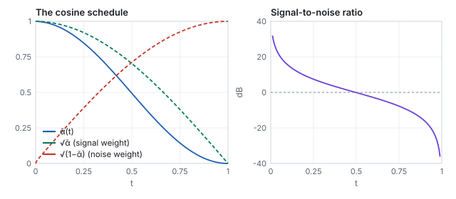
| \(t\) | \(\bar\alpha\) | \(\sqrt{\bar\alpha}\) | \(\sqrt{1-\bar\alpha}\) | SNR (dB) | PSNR of the digit below (dB) |
|---|---|---|---|---|---|
| 0.1 | 0.972 | 0.986 | 0.167 | 15.4 | 21.2 |
| 0.2 | 0.899 | 0.948 | 0.318 | 9.5 | 16.4 |
| 0.3 | 0.787 | 0.887 | 0.462 | 5.7 | 12.3 |
| 0.4 | 0.648 | 0.805 | 0.594 | 2.6 | 10.0 |
| 0.5 | 0.494 | 0.703 | 0.711 | −0.1 | 8.5 |
| 0.6 | 0.341 | 0.584 | 0.812 | −2.9 | 7.3 |
| 0.7 | 0.203 | 0.451 | 0.893 | −5.9 | 6.4 |
| 0.8 | 0.094 | 0.307 | 0.952 | −9.8 | 5.2 |
| 0.9 | 0.024 | 0.155 | 0.988 | −16.1 | 3.3 |
| 1.0 | 0 | 0 | 1 | −∞ | 3.3 |
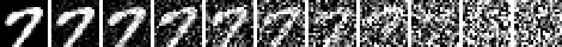
Nothing is learned here. At \(t=1\) every image has become the same standard Gaussian, which is the whole point: that is the one distribution we can sample from trivially.
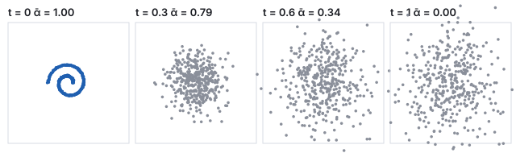
The schedule is a choice, and the first one was different. DDPM defined the process in 1,000 discrete steps with per-step noise variances \(\beta_k\) rising linearly from \(10^{-4}\) to \(0.02\), giving \(\bar\alpha_k = \prod_{j \le k}(1 - \beta_j)\). The cosine schedule was introduced because the linear one destroys the signal too early: half of the steps are spent on images that are already noise.
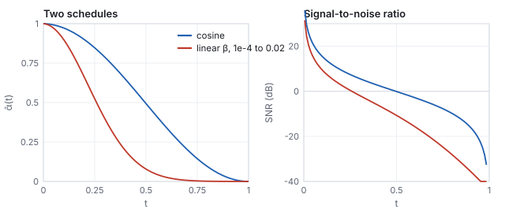
| \(t\) | 0.1 | 0.3 | 0.5 | 0.7 | 0.9 |
|---|---|---|---|---|---|
| \(\bar\alpha\), cosine | 0.972 | 0.787 | 0.494 | 0.203 | 0.024 |
| \(\bar\alpha\), linear \(\beta\) | 0.897 | 0.396 | 0.079 | 0.007 | 0.0003 |
| SNR, cosine (dB) | 15.4 | 5.7 | −0.1 | −5.9 | −16.1 |
| SNR, linear (dB) | 9.4 | −1.8 | −10.7 | −21.5 | −35.6 |
A schedule is only a way of spacing the noise levels the network sees; what matters is that the levels cover the range from “almost clean” to “almost noise” evenly in signal-to-noise ratio, which the cosine schedule does at about 3 dB per tenth. Later work (the EDM formulation of Karras and others, 2022) parametrizes the process directly by the noise standard deviation \(\sigma\) and treats the schedule and the sampler’s step spacing as separate design choices; the demos’ \(t\) is one such parametrization.
The learned part answers a local question: given \(\mathbf{x}_t\) and \(t\), where was \(\mathbf{x}_0\)? For a finite dataset \(\{\mathbf{x}^{(i)}\}\) the best possible answer is computable in closed form. Since \(\mathbf{x}_t\) given \(\mathbf{x}_0=\mathbf{x}^{(i)}\) is Gaussian with mean \(\sqrt{\bar\alpha}\,\mathbf{x}^{(i)}\) and variance \(1-\bar\alpha\), Bayes’ rule gives the posterior mean
| scaled data | \(\tfrac12 x^{(1)} = -0.5\), \(\tfrac12 x^{(2)} = +0.5\) |
| squared distances | \((0.3 + 0.5)^2 = 0.64\), \((0.3 - 0.5)^2 = 0.04\) |
| logits \(-d^2/(2\cdot\tfrac34)\) | \(-0.4267\), \(-0.0267\) |
| softmax weights | \(e^{-0.4267} = 0.653\), \(e^{-0.0267} = 0.974\); normalized: \(0.401\), \(0.599\) |
| posterior mean | \(\hat x_0 = 0.401\times(-1) + 0.599\times(+1) = 0.197\) |
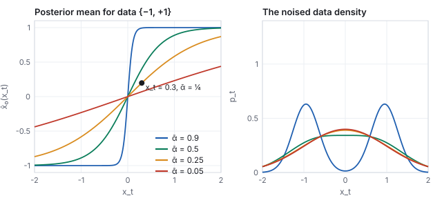
Two limits of the figure matter. As \(t\to0\), \(1-\bar\alpha\to0\), the weights become one-hot, and \(\hat x_0\) becomes exactly the nearest training point: the exact denoiser memorizes. As \(t \to 1\) the weights become equal and \(\hat x_0\) becomes the data mean: at high noise the best guess is the average image, which is why the first steps of every sampling run look like a gray blur.
The same function has four names, and a network may be trained to output any of them.
| the network predicts | formula | recover \(\hat{\mathbf{x}}_0\) by | used by |
|---|---|---|---|
| the clean image \(\hat{\mathbf{x}}_0\) | the posterior mean above | itself | the course’s network |
| the noise \(\hat{\boldsymbol\epsilon}\) | \((\mathbf{x}_t - \sqrt{\bar\alpha}\,\hat{\mathbf{x}}_0)/\sqrt{1-\bar\alpha}\) | \((\mathbf{x}_t - \sqrt{1-\bar\alpha}\,\hat{\boldsymbol\epsilon})/\sqrt{\bar\alpha}\) | DDPM, Stable Diffusion 1 |
| the score \(\nabla\log p_t\) | \((\sqrt{\bar\alpha}\,\hat{\mathbf{x}}_0 - \mathbf{x}_t)/(1-\bar\alpha) = -\hat{\boldsymbol\epsilon}/\sqrt{1-\bar\alpha}\) | from \(\hat{\boldsymbol\epsilon}\) | score-based models, the SDE view |
| the velocity \(\hat{\mathbf{v}}\) | \(\sqrt{\bar\alpha}\,\hat{\boldsymbol\epsilon} - \sqrt{1-\bar\alpha}\,\hat{\mathbf{x}}_0\) | \(\sqrt{\bar\alpha}\,\mathbf{x}_t - \sqrt{1-\bar\alpha}\,\hat{\mathbf{v}}\) | Stable Diffusion 2, distillation |
The score identity is Tweedie’s formula: the posterior mean is a step up the gradient of the log density of the noised data, which is the vector field the next figure draws as arrows. Predicting \(\boldsymbol\epsilon\) is ill-conditioned at low noise (the recovery divides by \(\sqrt{\bar\alpha} \approx 1\), fine) and predicting \(\mathbf{x}_0\) is ill-conditioned at high noise (the network must guess an image from static); the velocity \(\mathbf{v}\), an angle between the two, is well-conditioned at both ends, which is why it won out for models that must work with few steps.
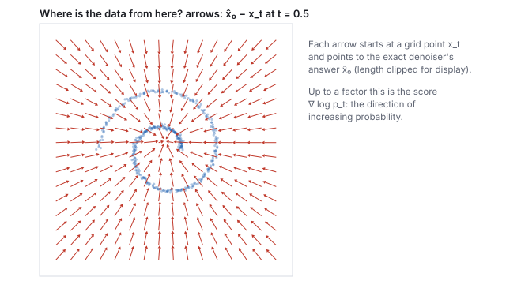
For a million photographs the sum in the exact denoiser is unaffordable and, worse, useless: it can only return the photographs. So the function is approximated by a network, and the training loop is one line: pick an image \(\mathbf{x}_0\) and a random \(t\), draw \(\boldsymbol\epsilon\), form \(\mathbf{x}_t\), ask the network for the noise (or for the image), and minimize the squared error,
\[ \mathcal{L}(\theta) \;=\; \mathbb{E}_{\mathbf{x}_0,\, t,\, \boldsymbol\epsilon} \Big[\, \big\|\boldsymbol\epsilon - \boldsymbol\epsilon_\theta(\mathbf{x}_t, t)\big\|^2 \Big]. \]for step in range(N):
x0 = random_batch(images) # clean images
t = uniform(0, 1, size=batch) # a noise level per image
eps = normal(0, 1, shape=x0.shape) # the noise
xt = sqrt(abar(t)) * x0 + sqrt(1 - abar(t)) * eps
loss = mean((net(xt, t, label) - target)**2) # target = eps, or x0, or v
loss.backward(); optimizer.step()
Every step is a small, well-posed regression against a target the
trainer generated itself, which is why diffusion trains stably where
adversarial models fought their own training. This is
DDPM (Ho, Jain & Abbeel 2020);
the idea comes from
Sohl-Dickstein et al. 2015,
who borrowed it from nonequilibrium thermodynamics, and the same
function was reached from the score side by
Song & Ermon 2019.
The course’s own network (the lecture’s last exhibit) is a
class-conditional perceptron with three hidden layers of 512 units
(SiLU activations, the
networks chapter) and 1,002,064 weights, trained by exactly this
loop with the Adam optimizer on the 60,000 MNIST training digits for
fifteen minutes on a laptop CPU (41,210 steps of batch 512), predicting
the clean image (tools/train-mlp.py). Section 6 shows what
it draws.
The loss is not an arbitrary choice; it is what maximizing the likelihood of the data reduces to. The reverse process is a chain of Gaussians \(p_\theta(\mathbf{x}_{t-1}\mid\mathbf{x}_t)\), and the log probability it assigns to a training image is bounded below by the evidence lower bound, a sum over steps of the divergence between the model’s reverse step and the true one:
DDPM’s observation was that dropping \(\lambda_t\) (weighting every noise level equally) gives better samples than the exact bound, because the bound over-weights the low-noise steps that barely change an image. The one-line loss above is that “simple” objective. Later work reweights on purpose: weighting by the signal-to-noise ratio, or with the velocity parameterization, which is the simple loss in different coordinates. Whichever weighting is used, the minimizer at each \(t\) is the posterior mean of Section 2: the loss is a way of approximating the exact denoiser, and the weights only say which noise levels get the network’s attention.
| mechanism | how the network reads the condition | where |
|---|---|---|
| embedding added to the time embedding | a learned vector per class, summed into the hidden state | the course network; class-conditional ImageNet models |
| cross-attention | image tokens attend to the caption’s token embeddings at every layer (the networks chapter) | Stable Diffusion, Imagen |
| concatenation | the condition is an image (a depth map, a mask, a low-resolution version) stacked onto \(\mathbf{x}_t\) as extra channels | super-resolution, inpainting, ControlNet’s input |
| adapter | a trained copy of the encoder half reads the condition and adds its features to the frozen model | ControlNet |
| guidance | the difference between conditional and unconditional predictions, amplified at sampling time | Section 7 |
Start from \(\mathbf{x}_T\sim\mathcal{N}(0,I)\) and step \(t\) down a chosen sequence \(t_K > \dots > t_0 = 0\). At each step form \(\hat{\mathbf{x}}_0\) from the denoiser, recover the implied noise \(\hat{\boldsymbol\epsilon}\), and move to the next time. The DDIM family (Song, Meng & Ermon 2021) writes the update as
Read it as: re-noise the current best guess of the clean image to the next, slightly lower, noise level, reusing the noise you believe is already in the picture (\(\sigma = 0\)) or partly replacing it with fresh noise (\(\sigma > 0\)). The forward formula and the reverse step are the same equation; the only new ingredient is that \(\mathbf{x}_0\) is unknown and \(\hat{\mathbf{x}}_0\) stands in for it.
| schedule | \(\bar\alpha(t) = 0.2040\), \(\sqrt{\bar\alpha} = 0.4517\), \(\sqrt{1-\bar\alpha} = 0.8922\); \(\bar\alpha(t') = 0.2297\), \(\sqrt{\bar\alpha'} = 0.4792\), \(\sqrt{1-\bar\alpha'} = 0.8777\) |
| where the particle is | \(\mathbf{x}_t = (0.8662,\; 1.0562)\) |
| exact denoiser | \(\hat{\mathbf{x}}_0 = (0.0367,\; 0.1490)\): still near the data’s center, since most of the picture is noise |
| implied noise | \(\hat{\boldsymbol\epsilon} = (\mathbf{x}_t - 0.4517\,\hat{\mathbf{x}}_0)/0.8922 = (0.9523,\; 1.1084)\) |
| next position (\(\sigma = 0\)) | \(\mathbf{x}_{t'} = 0.4792\,\hat{\mathbf{x}}_0 + 0.8777\,\hat{\boldsymbol\epsilon} = (0.8534,\; 1.0442)\) |
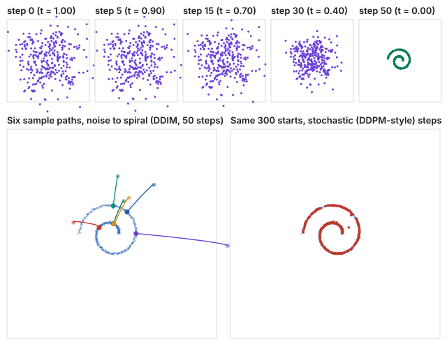
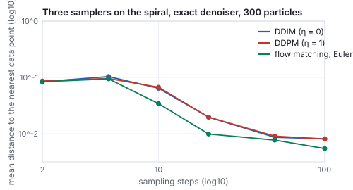
| steps | 2 | 5 | 10 | 20 | 50 | 100 |
|---|---|---|---|---|---|---|
| DDIM (\(\sigma = 0\)) | 0.084 | 0.103 | 0.064 | 0.020 | 0.009 | 0.008 |
| DDPM (\(\sigma\) at its full value) | 0.086 | 0.096 | 0.067 | 0.020 | 0.009 | 0.008 |
| flow matching, Euler (Section 5) | 0.084 | 0.094 | 0.034 | 0.010 | 0.008 | 0.006 |
Below ten steps every sampler lands its particles near the data’s center of mass rather than on the arms (a distance of 0.08 to 0.10 is the width of the spiral’s gaps); from 20 steps the error falls by about a factor of two per doubling, and from 50 it has reached the floor set by the spacing of the 400 data points. Stochastic and deterministic stepping cost the same and land the same; they differ in which point a given start reaches, not in how accurately. Fewer steps trade detail and diversity for speed; distillation trains a student to jump where the teacher walked, down to a handful of steps. Stochastic sampling with many steps is the original DDPM; deterministic sampling with a few dozen is what most systems ship.
The deterministic sampler is not a trick. The forward process is a stochastic differential equation, \(d\mathbf{x} = -\tfrac12\beta(t)\,\mathbf{x}\,dt + \sqrt{\beta(t)}\,d\mathbf{w}\) (the “variance-preserving” SDE), and Anderson’s theorem gives its time reversal as another SDE whose drift involves the score \(\nabla\log p_t\); running it backward with the learned score is DDPM. Every SDE has a companion ordinary differential equation with the same marginal densities at every \(t\), \[ \frac{d\mathbf{x}}{dt} = -\tfrac12\beta(t)\big(\mathbf{x} + \nabla_{\mathbf{x}}\log p_t(\mathbf{x})\big), \] the probability-flow ODE (Song et al. 2021). DDIM is a first-order solver for it, which is why its paths are smooth curves and why a given start always lands at the same place: an ODE has one solution per initial condition. The higher-order solvers that cut the step count (DPM-Solver, Heun’s method in EDM) are the numerical-analysis toolkit of the animation chapter applied to this equation, and the step-count table above is their convergence curve.
If the goal is an ODE from noise to data, the forward process need not be a diffusion at all. Flow matching (Lipman and others, 2022; rectified flow, Liu and others, 2022) draws the straight line between a data point and a noise point, \[ \mathbf{x}_t = (1 - t)\,\mathbf{x}_0 + t\,\boldsymbol\epsilon, \qquad \frac{d\mathbf{x}_t}{dt} = \boldsymbol\epsilon - \mathbf{x}_0, \] and trains the network to predict that constant velocity from \((\mathbf{x}_t, t)\) by squared error. Sampling is Euler’s method on the learned field from \(t = 1\) down to \(0\). Every ingredient of the diffusion recipe survives (a schedule, in which the weights are now \(1 - t\) and \(t\) rather than \(\sqrt{\bar\alpha}\) and \(\sqrt{1 - \bar\alpha}\); a posterior-mean target; a conditional variant; guidance), and the marginal velocity for a finite dataset is again computable exactly.
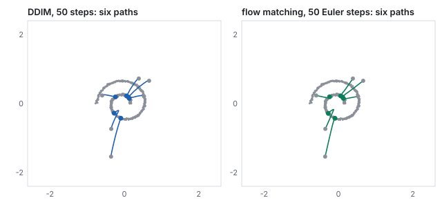
Straight paths are the point: an Euler step along a straight line is exact, so a field whose paths are nearly straight can be sampled in few steps, and the table of Section 4 shows flow matching ahead of DDIM at every count from 10 steps on. Rectified flow goes further and re-pairs noise and data along the learned paths to straighten them again (“reflow”), which is how Stable Diffusion 3 and the models after it reach good samples in a few dozen steps and their distilled versions in one to four.
Run the exact sampler on the 2,000 digits, each a point of \(\mathbb{R}^{400}\), and every sample lands exactly on a training digit. An exact denoiser for a finite set can only return the set: at the last step the weights are one-hot and \(\hat{\mathbf{x}}_0\) is a member. The demos measure this with the distance from a sample to its nearest training digit (per pixel, in \([-1,1]\) units), and it reads \(0.000\).
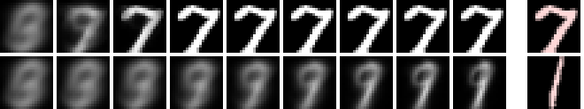
The exact denoiser can be made to generalize a little by hand. Add a
floor \(h^2\) to the kernel variance, \(1 - \bar\alpha \to 1 - \bar\alpha + h^2\),
so that the weights never become one-hot and the average keeps
averaging to the end. This is the smooth knob of the digits
demo, and it is a kernel density estimator’s bandwidth.
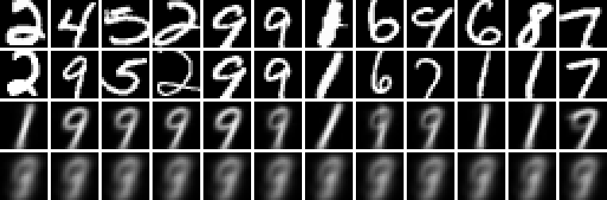
A network has no such ceiling, for the reason the networks chapter gave: it is smooth between examples in the space of functions, not of pixels. Trained to approximate the posterior mean on 60,000 digits it never sees the sum; it learns the regularities of strokes that the sum only implicitly contains, and at sampling time it produces images that follow those regularities without being any training image.
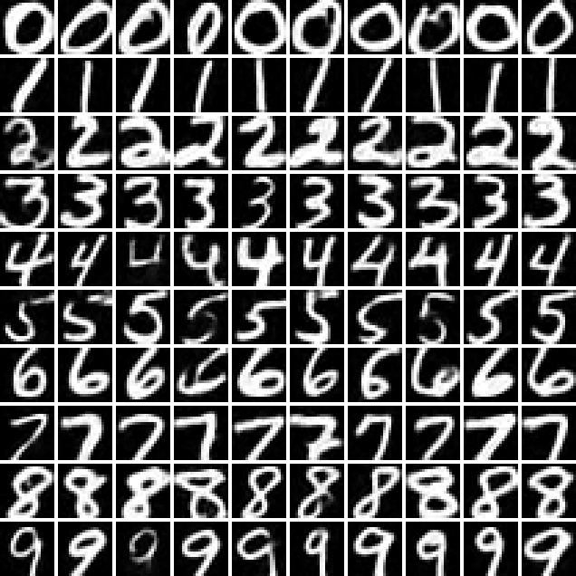
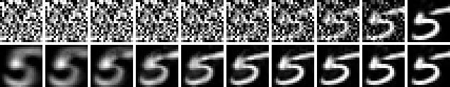
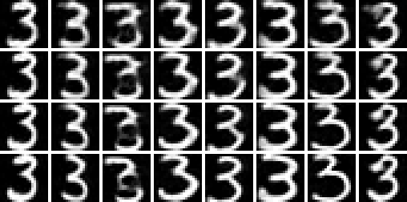
smooth knob: exact is memorization, \(h\approx3\) makes
novel blends, \(h=5\) collapses to one blurry average), then
the network draws:
the trained denoiser samples digits it never saw, with the class
buttons as conditioning and guide as \(w\).
css551/, with node -e "…":
import('./lib/core/diffusion.js').then(d=>{
console.log('abar(0.3)=',d.alphaBar(0.3).toFixed(4),'snr(0.3)=',d.snrDb(0.3).toFixed(2),'dB');
const sp=d.makeShape('spiral');
console.log('denoise(0.8,0.6,t=0.5)=',d.denoisePoint(0.8,0.6,0.5,sp).map(v=>v.toFixed(3)));
for(const st of [5,20,50]) console.log('steps',st,'nearest',
d.meanNearestDistance(d.sample({data:sp,steps:st,n:300,seed:1}),sp).toFixed(4));});
Expected: abar(0.3)= 0.7869 snr(0.3)= 5.67 dB, the table’s row; denoise(0.8,0.6,t=0.5)= [ '0.102', '0.158' ], a pull toward the spiral’s center; and steps 5 nearest 0.1034, steps 20 nearest 0.0197, steps 50 nearest 0.0086, the DDIM row of Section 4.const fs=require('fs');Promise.all([import('./lib/core/mlp-denoiser.js'),import('./lib/core/diffusion-nd.js')]).then(([md])=>{
const man=JSON.parse(fs.readFileSync('lib/assets/mnist/mlp-denoiser.json'));
const w=new Float32Array(fs.readFileSync('lib/assets/mnist/mlp-denoiser.bin').buffer.slice(0));
const net=md.makeMlpDenoiser(man,w);console.log('weights',net.params,'predicts',net.predicts);
const out=net.sample({steps:30,m:3,seed:1,cls:7,w:2});
console.log('ink pixels per sample',out.map(v=>{let k=0;for(const p of v)if(p>0)k++;return k;}));});
Expected: weights 1002064 predicts x0 and ink pixels per sample [ 94, 90, 58 ]: three 7s of different weights, from three noises. Change cls and seed; print a sample as 20 rows of characters to see it.A conditional denoiser takes the label (or the caption) as an extra input; the network above reads a learned 64-number class vector, the embedding of the networks chapter. Classifier-free guidance (Ho & Salimans 2022) trains the network both with and without its condition \(c\) (the condition is dropped at random, 15 % of the time in the course’s run, and replaced by an eleventh “no class” embedding) and, at sampling time, exaggerates the difference by a scale \(w\):
\[ \hat{\mathbf{x}}_0 \;\leftarrow\; \hat{\mathbf{x}}_0(\varnothing) + w\,\big(\hat{\mathbf{x}}_0(c) - \hat{\mathbf{x}}_0(\varnothing)\big). \]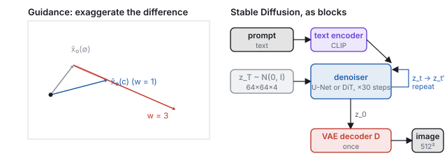
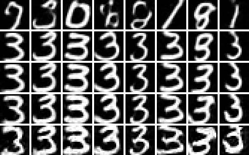
Nothing in the recipe changes between the digit network and the largest image models; three things scale.
| the course’s network | Stable Diffusion (2022) | |
|---|---|---|
| the point | \(20\times20\) gray, 400 numbers | a \(64\times64\times4\) latent (16,384 numbers) standing for a \(512\times512\times3\) image |
| the condition | a class index, via a learned 64-vector | a caption, via CLIP’s text encoder, read at every layer |
| the network | a 3-layer perceptron, \(10^6\) weights | a U-Net (later a transformer), about \(10^9\) weights |
| the data | 60,000 digits | billions of captioned images |
| the schedule, the loss, the sampler, guidance | the same | |
The point gets bigger, so diffuse a latent. A \(512\times512\) image is 786,432 numbers; denoising that a thousand times per picture is unaffordable. Latent diffusion runs the whole process on an autoencoder’s \(64\times64\times4\) latent and decodes once at the end (Rombach et al. 2022); that is Stable Diffusion, and it is why the method fits on a gaming GPU. The autoencoder is a variational one (Kingma and Welling, 2014): its encoder outputs a mean and a variance per latent number, the decoder is trained on samples from that Gaussian, and a small penalty keeps the latents near a standard normal, so that the latent space is smooth and every point in it decodes to something. Without that regularization the diffusion model would have to learn a latent distribution full of holes. The decoder is also trained with a perceptual and an adversarial loss, so that fine texture is re-synthesized rather than reproduced; the latent keeps layout, shape and color, and the decoder invents the grain. The condition gets richer, so put text in the class slot. The class embedding the digit network reads becomes a CLIP text embedding consulted at every layer through cross-attention; guidance is unchanged. The network gets bigger. U-Nets in 2020 to 2022, then transformers over image patches (DiT, Peebles & Xie 2023); quality followed scale. The two text-to-image systems that made the public notice in 2022 took different routes to the same place, DALL·E 2 diffusing in CLIP’s embedding space and Imagen conditioning on a large language model’s text embedding.
Two developments matter most to a graphics course. ControlNet (Zhang, Rao & Agrawala 2023) conditions the denoiser on a structural image, a depth map, a normal map or an edge image, and makes it keep that structure while painting the appearance; depth and normals are the pipeline’s own by-products (the viewing chapter, the meshes chapter), so geometry and camera come from the renderer, where you have control, and appearance from the model.
And an image model can train a 3D scene: DreamFusion (Poole et al. 2022) optimizes a NeRF so that its renders, from random viewpoints, score well under a text-conditioned image model, with the gradients flowing back through the differentiable renderer (score distillation; the renderer is the subject of the learned-scenes chapter). Video is the same recipe with a time axis: a block of latents attended across frames (Ho et al. 2022), scaled by 2024 to minute-long clips.
A denoiser can be scored by its squared error, but a generator cannot: its samples are supposed to be new, so there is no reference image to compare against, and the metrics of the image-space chapter do not apply. The standard answer compares distributions.
The real metric has the same two blind spots, at scale. It cannot see memorization: a model that emits training images verbatim scores perfectly. And it depends entirely on the embedding network: features trained on object categories reward object-like texture and are indifferent to global layout, hands, or text, which is why a model can have an excellent FID and draw six fingers. Other metrics fill in: precision and recall on the feature manifold (are the samples on the data’s sheet, and do they cover it), CLIP score for whether a sample matches its caption, and human preference studies, which remain the court of last resort. The course’s own nearest-training-digit distance measures the one thing FID cannot, novelty, and nothing else, as the step-count figure of Section 6 showed.
A diffusion model has no scene, so nothing in it enforces that the cup on frame one is the cup on frame sixty, that objects fall, that hands have five fingers, or that a sign spells a word; it has no camera to move an inch and no edit that leaves everything else fixed. Graphics has exactly those things and lacks the model’s taste for appearance. The field is merging them from both sides: engines that ship generated textures and assets, differentiable renderers that let images train scenes, and world models that generate the next frame in response to a controller input. Neither half erases the pipeline you built; both stand on it.
| Year | Paper | What it added |
|---|---|---|
| 2014 | Kingma & Welling, VAE | the variational autoencoder behind latent diffusion |
| 2015 | Sohl-Dickstein et al. | diffusion probabilistic models: destroy, learn to undo |
| 2017 | Heusel et al. | the Fréchet inception distance |
| 2019 | Song & Ermon | the score (vector field) view |
| 2020 | Ho, Jain & Abbeel, DDPM | predict the noise; it works at scale |
| 2020 | Song, Meng & Ermon, DDIM | deterministic, few-step sampling |
| 2021 | Song et al. | diffusion as an SDE; the probability-flow ODE |
| 2021 | Nichol & Dhariwal | the cosine schedule; learned variances |
| 2021 | Dhariwal & Nichol | guidance; quality past GANs |
| 2022 | Salimans & Ho | the velocity parameterization; progressive distillation |
| 2022 | Ho & Salimans | classifier-free guidance |
| 2022 | Rombach et al., latent diffusion | Stable Diffusion: diffuse in a latent |
| 2022 | Ramesh et al., DALL·E 2; Saharia et al., Imagen | text-to-image at scale, two routes |
| 2022 | Karras et al., EDM | the design space: schedule, sampler and parameterization untangled |
| 2022 | Lipman et al., flow matching; Liu et al., rectified flow | straight paths from noise to data |
| 2022 | Poole et al., DreamFusion | text-to-3D by score distillation |
| 2023 | Zhang, Rao & Agrawala, ControlNet | conditioning on depth, normals, edges |
| 2023 | Peebles & Xie, DiT | the network is whatever scales |